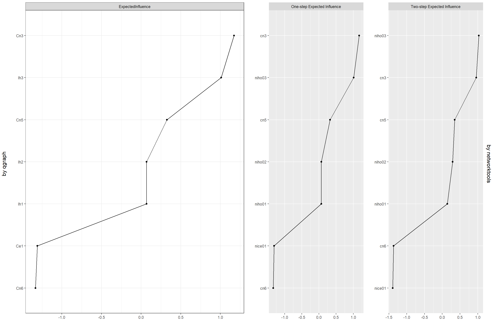
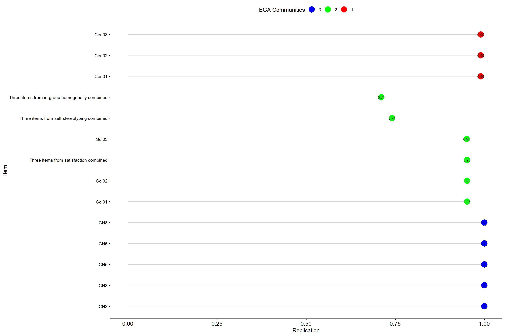

Many scholars misleadingly equate psychometrics to IRT today. However, IRT cannot be the solo rock star of psychometrics. Quoting this guy psychometrics has got something to do with formalizing the connection between data and theory; realizing that has multiple paths. So let’s traverse some of those paths, shall we?..
The workhorse of psychometrics has been the general SEM framework, particularly the latent variable models built with CFAs, and more recently with the IRTs. There is a cool new kid on the block now, though… actually has been there for a while now. This kid may be more similar to the existing workhorse in many ways. Yes! I’m talking about latent variable models and network models being equivalent again. Here is a more recent paper. Basically, we are one more step ahead when it comes to understanding and distinguishing the equivalence in unidimensional constructs; however, we need more time and research for scrutinizing the equivalence in multi-dimensional constructs. But I’m simply impatient.
In this blog post, I want to do 3 things.
I am using two instruments measuring very closely related psychological constructs: collective narcissism2 and national identification. Let’s start with the SEM framework. Item wordings and latent constructs are displayed in the table below.
| 2nd Order latent construct | 1st Order latent construct | variable name |
Item Abbreviation |
Item wording |
|---|---|---|---|---|
| Self-Investment (SIn) | Centrality (Ce) | nice01 | Ce1 | I often think about the fact that I am German. |
| nice02 | Ce2 | The fact that I am German is an important part of my identity. | ||
| nice03 | Ce3 | Being German is an important part of how I see myself. | ||
| Solidarity (So) | niso01 | So1 | I feel a bond with Germans. | |
| niso02 | So2 | I feel solidarity with Germans. | ||
| niso03 | So3 | I feel committed to Germans. | ||
| Satisfaction (Sa) | nisa01 | Sa1 | I am glad to be German. | |
| nisa02 | Sa2 | It is pleasant to be German. | ||
| nisa03 | Sa3 | Being German gives me a good feeling. | ||
| Self-Definition (SDe) | Self-Stereotyping (Ss) | niss01 | Ss1 | I have a lot in common with the average German person. |
| niss02 | Ss2 | I am similar to the average German person. | ||
| niss03 | Ss3 | I am a typical German. | ||
| In-Group Homogeneity (IH) | niho01 | Ih1 | German people have a lot in common with each other. | |
| niho02 | Ih2 | German people are very similar to each other. | ||
| niho03 | Ih3 | German share a lot of the same characteristics. | ||
| Collective Narcissism (CN) | cn2 | Cn2 | Germany deserves special treatment. | |
| cn3 | Cn3 | I will never be satisfied until Germany gets all it deserves. | ||
| cn5 | Cn5 | It really makes me angry when others criticize Germany. | ||
| cn6 | Cn6 | If other countries listened to Germany more, the world would be a much better place. | ||
| cn8 | Cn8 | Not many people seem to fully understand the importance of Germany. |
The overall measurement model looks like the following.
Here is the goodness of fit stats and reliabilities.
| Robust \(\chi^2\) (df): | 907.029 (162)*** | ||
| Scaling correction factor for the Yuan-Bentler correction | 1.165 | ||
| Robust CFI: | 0.967 | ||
| Robust TLI: | 0.962 | ||
| Robust RMSEA (P-value) 90 % CI: | 0.049 (0.994) 0.046-0.053 | ||
| SRMR: | 0.037 | ||
| \(\omega_{total}\) | 0.96 | ||
| \(\omega_{CN}\) | 0.84 | ||
| \(\omega_{Ce}\) | 0.82 | ||
| \(\omega_{So}\) | 0.85 | ||
| \(\omega_{Sa}\) | 0.86 | ||
| \(\omega_{Ss}\) | 0.89 | ||
| \(\omega_{IH}\) | 0.86 | ||
| \(\omega_{SIn}\) | 0.94 | \(\omega_{level1}\): 0.87 | partial \(\omega_{level1}\):0.93 |
| \(\omega_{SDef}\) | 0.73 | \(\omega_{level1}\):0.65 | partial \(\omega_{level1}\):0.88 |
All GoF stats look pretty good. Let’s switch from the reliability stuff to a different paradigm. Item information curves (IIC) and cumulated information with measurement error (TCC + error) are displayed in the plots below for each construct3.
Collective narcissism and self-stereotyping have more accumulated information compared to the other constructs. Though, with collective narcissism, the low error range on the latent continuum is a bit narrower compared to the other constructs. I especially like the error line of solidarity, satisfaction, and self-stereotyping scales. All these observations are not super relevant to what I intend to do below. Let’s just keep an eye on the IICs. Cn3, nice03, niso01, nisa02, niss02, and niho03 have the peaking info curves.
Quick recap: the network represents the true relationship across the items; edges are the penalized associations, red being negative, blue being positive. The color of the nodes can/might/should correspond to the underlying latent constructs. Louvain community detection algorithm lumps centrality and solidarity items together. The rest is the same as the measurement model. What I like about the plot on the right (the network plot with MDS configuration layout (see here) is the scale items coming properly together.
I am not even going to interpret the centrality plot below at this early stage, but we are already seeing the hint that the two-step expected influence makes a difference in an attitude network of multiple latent constructs’ items.
One can use two R libraries (namely networktools and EGAnet) for item reduction in an attitude network. We may need item reduction in an attitude network simply because inflated and misleading associations might remain in the network even after regularization. Both packages offer unique empirical ways to eliminate inflated associations. While networktools suggests and removes redundant items with two convenient functions, EGAnet enables manual intervention. Below are the problematic item-pairs suggested by networktools.
| suggested reductions | proportion values of the bad pairs | |
|---|---|---|
| cn8 & cn2 | 0.1111111 | |
| niso03 & nice03 | 0.2222222 | |
| nisa02 & nisa01 | 0.2222222 | |
| niss03 & niss01 | 0.2777778 | |
| niss03 & niss02 | 0.2777778 | |
| niso02 & nice02 | 0.3333333 | |
| nisa03 & niso03 | 0.3333333 | |
| niso01 & nice02 | 0.3888889 | |
| niso03 & nice02 | 0.3888889 | |
| nisa03 & nice02 | 0.3888889 | |
| niso02 & niso01 | 0.3888889 | |
| nisa03 & niso01 | 0.3888889 | |
| niso02 & nice03 | 0.4444444 | |
| nisa03 & niso02 | 0.4444444 |
The good thing about the networktools’ convenient functions is the automatic suggestion and removal. Though, in my experience, when you have attitude networks composed of multiple latent constructs’ items, networktools’ convenient functions become a bit inconvenient as we see above. In this particular example, the automatic removal does not also work simply because quite a few items belong to multiple “bad-pairs”. The small table below shows all the problematic items ordered by scale. I am going to go ahead and brutally kill all these bad boys.
| Items suggested for reduction | ||||
|---|---|---|---|---|
| nice02 | niso01 | nisa01 | niss01 | cn2 |
| nice03 | niso02 | nisa02 | niss02 | cn8 |
| niso03 | nisa03 | niss03 | ||
Below is the resulting new attitude network with reduced items. In-group homogeneity is still its own thing; one centrality item joined collective narcissism.
networktoolsNote that the item reduction strategy by networktools works on two adjacent vertices/nodes, and apparently, it does not automatically account for cliques.
And here is the centrality plot of the network with reduced items. It is still better to rely on the two-step expected influence. We got niho03, cn3, and niho02 at the top in contrast to nisa03, nice02, and niss02 (all absent/dead in this reduced network). cn3 and niho03 are the items with the highest information in their respective scales. Still, we lost other potential informative items like nice03, niss02, which I brutally killed after the bad-pair suggestions by networktools.
networktools
EGAnet (in contrast to networktools) provides more control and forces you to think while you are manually making your choices. It plays on the cliques in the network by offering you a target node (see the vignette-like tutorial here). The coolest thing is that the whole procedure is designed for the networks that include multiple latent constructs. In this example, I only removed the adjacent two nodes within cliques and ended up with the following network. The plot displays the reduced attitude network after the Louvain community detection algorithm.
EGAnetWe can also get the network loadings. We are looking at centrality, solidarity, and collective narcissism remaining “as is” in the network. Solidarity is within a community that includes combined “in-group homogeneity” and satisfaction scales.
| 1 | 2 | 3 | ||
|---|---|---|---|---|
| Cen01 | 0.206 | 0.070 | 0.059 | |
| Cen02 | 0.270 | 0.241 | 0.031 | |
| Cen03 | 0.346 | 0.138 | 0.091 | |
| Sol01 | 0.117 | 0.364 | 0.010 | |
| Sol02 | 0.064 | 0.324 | 0.036 | |
| Sol03 | 0.164 | 0.252 | 0.092 | |
| Three items from satisfaction combined | 0.124 | 0.221 | 0.083 | |
| Three items from self-stereotyping combined | 0.106 | 0.238 | 0.026 | |
| Three items from in-group homogeneity combined | 0.040 | 0.124 | 0.095 | |
| CN2 | 0.040 | 0.022 | 0.368 | |
| CN3 | 0.109 | 0.112 | 0.411 | |
| CN5 | 0.066 | 0.055 | 0.287 | |
| CN6 | 0.000 | 0.070 | 0.216 | |
| CN8 | 0.013 | 0.055 | 0.292 |
Here are the chances of this network structure replicating in other samples.

Finally, let’s look at the centrality plot once again. After EGAnet’s item-reduction process, we got CN3, sol01, cen02 at the top. Well, I guess this means EGAnet’s procedure does not perform any better or worse than networktools’ procedure when it comes to making centrality plots more reliably interpretable.
EGAnetOverall, judging from this little analysis looks like there may not be much correspondence between IRT’s information and attitude networks’ node centrality. Well, I guess the paradigms are quite different, to begin with. Is there a theoretical and/or empirical reason to expect that the item that can provide more information about a latent trait can also be more central in an attitude network? In my crazy world, there is a theoretical reason to expect that, but the empirical stuff beats me. I just keep an eye on the evolving literature.
Before moving on the third/final aim of this blog post (I think I already made this clear from the tone anyway but still…), I think EGAnet’s item reduction procedure is much better compared to networktools’ functions. One downside of EGAnet is it not liking missing values. I had to remove all the missing values, which reduced my sample size from 2223 to 1567.
Now that we have a reduced network, we can move on to examining the correlates with model-based recursive partitioning (again see this and this). Easy-peasy! Looks like political orientation is an obvious moderator for national identification in this sample. On the right side of the spectrum, we see the influence of immigrant background and gender. On the left, the age-group and immigrant background play a role. The socio-demographics + the political orientation is never surprising/interesting. What is always more interesting is the psychological profiles.
Correlational class analysis4 suggests two latent profiles using the reduced attitude network. Profile 2’s global strength5 is significantly higher than Profile 1’s. The transitivities (read as network densities) are also obviously/visually different. Below are the attitude networks of the two profiles; the third plot shows the significantly different edges between the profiles. Let me put it this way: there are 15 edges with a significant weight difference on a p<.05 level; not all of these 15 are displayed on the plot, and I’m only going to focus on the significantly different edges that have weight differences >.1 (also see the table below).
| Edges | the difference between edge-strength |
|---|---|
| CN2–Cen01 | 0.17 |
| CN3–Cen03 | 0.16 |
| CN5–Sol01 | 0.12 |
| CN08–Sol02 | 0.16 |
| Sscom–SatCom | 0.17 |
| CN5–SatCom | -0.1 |
| CN6–SatCom | 0.14 |
6/7 significantly different edges (with weights >.1) involves collective narcissism, which hints the importance of this construct in national identification. Below are the plots with Eigen model configurations. It’s not super obvious what the X & Y axis represent here, but for Profile 1, Cen03 (Being German is an important part of how I see myself) is high on both axis. All the items except combined in-group homogeneity and self-stereotyping are aligned to the right on the x-axis for Profile 1. Cen01 (I often think about the fact that I am German) and CN8 (Not many people seem to fully understand the importance of Germany) are closely related somewhere in the middle. In contrast, Profile 2’s attitude network is wide-ranging on the x-axis. More collective narcissism items are higher on the y-axis. In Profile 2 network, Cen03 (Being German is an important part of how I see myself) & CN3 (I will never be satisfied until Germany gets all it deserves) are very closely related somewhere towards the high-end of both x & y axes.
I think the close relationship between Cen01—CN8 in Profile 1’s network reflects a vulnerable collective narcissism. German national identity is salient for Profile 1, and the frustration of others not fully recognizing the country’s importance accompanies this saliency. National identity is salient for Profile 2 as well. However, for this profile, there is that exaggerated emotional investment closely accompanying the identity centrality, indicated by CN3 (I will never be satisfied until Germany gets all it deserves). My best guess is that Profile 2 is high on both self-investment and self-definition; Profile 1 is high(ish) on self-investment but not so high on self-definition. This guess can be (dis-)/confirmed with actual factor scores, which I’m not going to do in this blog post. And, BTW, those who are interested in the different perceptions of German national identity can also take a look at this.
That is the end of the three things I wanted to do.
Takeaways are
EGAnet’s item-reduction approach over networktools’ approach.Boutyline, A., & Vaisey, S. (2017). Belief Network Analysis: A Relational Approach to Understanding the Structure of Attitudes. American Journal of Sociology, 122(5), 1371-1447. doi:10.1086/691274
Bringmann, L. F., Elmer, T., Epskamp, S., Krause, R. W., Schoch, D., Wichers, M., . . . Snippe, E. (2019). What do centrality measures measure in psychological networks? Journal of Abnormal Psychology, 128(8), 892-903. doi:10.1037/abn0000446
Christensen, A. P., Golino, H., & Silvia, P. (2019, March 4). A Psychometric Network Perspective on the Validity and Validation of Personality Trait Questionnaires. https://doi.org/10.31234/osf.io/ktejp
Ditlmann, R. K., & Kopf-Beck, J. (2019). The Meaning of Being German: An Inductive Approach to National Identity. Journal of Social and Political Psychology, 7(1), 423-447. doi:10.5964/jspp.v7i1.557
Golec de Zavala, A., Dyduch-Hazar, K., & Lantos, D. (2019). Collective Narcissism: Political Consequences of Investing Self-Worth in the Ingroup’s Image. Political Psychology, 40(S1), 37-74. doi:10.1111/pops.12569
Jones, P. J., Mair, P., & McNally, R. J. (2018). Visualizing Psychological Networks: A Tutorial in R. Frontiers in Psychology, 9(1742). doi:10.3389/fpsyg.2018.01742
Jones, P. J., Mair, P., Simon, T., & Zeileis, A. (2019). Network Model Trees. https://doi.org/10.31219/osf.io/ha4cw
Robinaugh, D. J., Millner, A. J., & McNally, R. J. (2016). Identifying highly influential nodes in the complicated grief network. Journal of abnormal psychology, 125, 747.
Roth, J., & Mazziotta, A. (2015). Adaptation and validation of a German Multidimensional and Multicomponent Measure of Social Identification. Social Psychology, 46(5), 277–290. https://doi.org/10.1027/1864-9335/a000243
van Bork, R., Rhemtulla, M., Waldorp, L. J., Kruis, J., Rezvanifar, S., & Borsboom, D. (2019). Latent Variable Models and Networks: Statistical Equivalence and Testability. Multivariate Behavioral Research, 1-24. doi:10.1080/00273171.2019.1672515
An ad-hoc solution to the apparent problem had been the “expected influence” measure, which can account for the edges with negative weights (see this). Though, the overall interpretation limitation and the unreliability of these centrality measures remain as issues.↩︎
This is “an exaggerated emotional investment in the nation by believing that other groups insufficiently appreciate the nation’s exceptionality”.↩︎
I can sense those who are familiar to the IICs raising their eyebrows after seeing the jiggly curves. I take full responsiblity for that :) This is a pooled sample, and in one of the sub-samples the response categories for national identification scale were different: 1-7 in contrast to 1-5. You don’t even wanna see the CCC’s. Though, take my word for it, don’t judge by the plots ;) this national identification scale has solid psychometric properties; try it with proper samples. I don’t think I’m messing up too much with the (accumulated) information here.↩︎
Read this as “analysis based solely on association patterns without much of a penalization”.↩︎
Nothing but the absolute sum of all edges in the network. The formal comparison relies on a permutation test to examine the invariance in the global strengths.↩︎